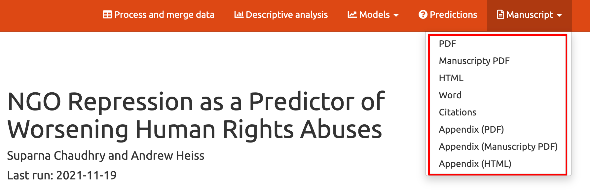
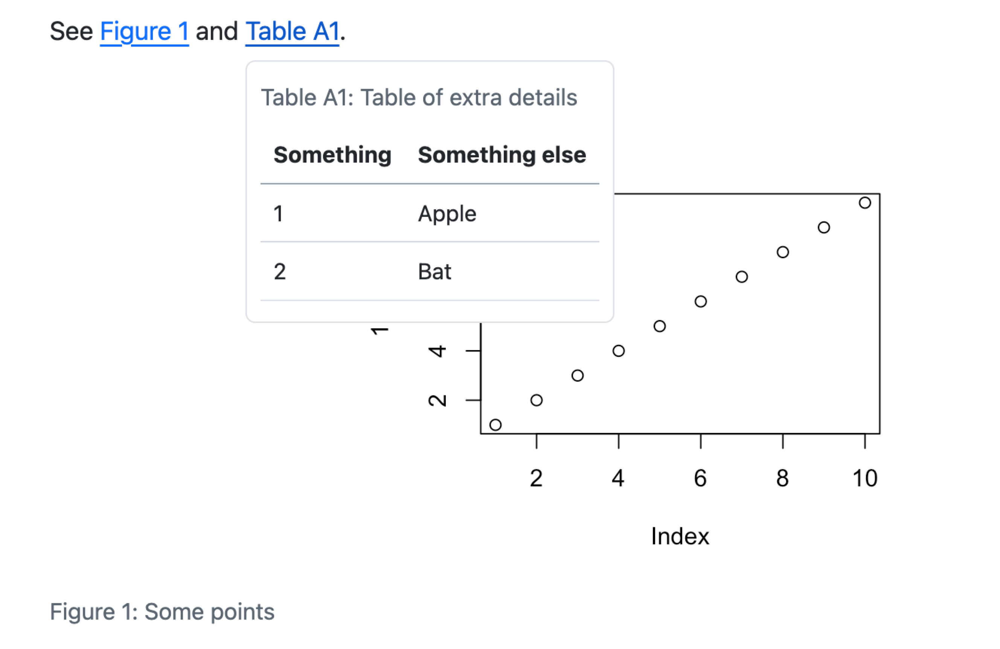
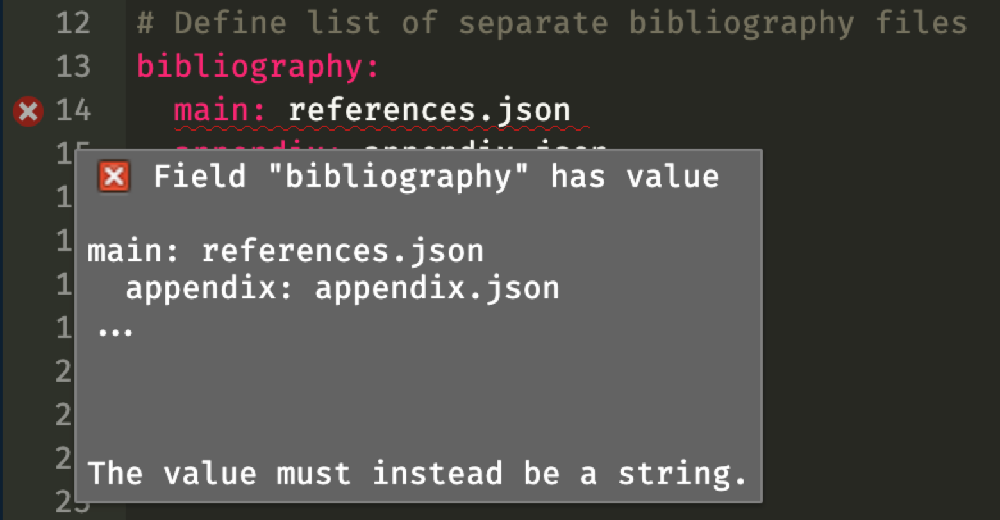

![]()
If you want to skip the explanation and justification for why you might want separate bibliographies, you can skip down to the example section, or just go see some example files at GitHub.
Why use separate bibliographies?
In academic articles, it’s common to have a supplemental appendix with extra tables, figures, robustness checks, additional math, proofs, and other details. Putting content in the appendix is important for providing additional evidence for the paper’s argument—and for placating reviewers who want to see a dozen more robustness checks. Also, journal articles have word count limits, and sticking stuff in the appendix is a helpful way to circumvent those limits, since the appendix doesn’t get typeset with the rest of the article and is instead posted to the journal’s website as a supplemental file.
For years, my approach to making an appendix has been to use two separate Markdown files (either plain Markdown, R Markdown, or Quarto Markdown):
manuscript.md: The actual paperappendix.md: The appendix
That’s nice and straightforward and easy. I get two separate documents in the end, like this project:

Using separate files also lets me find the word count for the manuscript without needing to account for the appendix (like with my Quarto word count extension).
The biggest downside to this system, though, is that it’s impossible to reference the appendix from the manuscript. A magical feature of pandoc (and Quarto in particular) is its ability to cross reference tables, figures, equations, sections, and other content in your document. I can write something like this:
See @fig-results and @tbl-details for the results.…which turns into this when rendering the document:
See Figure 1 and Table 1 for the results.
Those numbers are automatically incremented, so it might say “Figure 4” if you have images earlier in the document. The numbers can have hyperlinks added to them so you can jump to the corresponding figure or table, and if you’re using rendering to HTML with Quarto, you also get a neat little preview popup when you hover over the link:

However, you cannot cross reference content that is in a separate file. For instance, if I’m writing in manuscript.qmd and I have a table in appendix.qmd named tbl-extra-details, if I write this:
See @fig-results and @tbl-details for the results, and @tbl-extra-details for complete details.…I’ll get this when rendering:
See Figure 1 and Table 1 for the results, and ?tbl-extra-details for complete details.
My only way of fixing this has been to manually type the number of the appendix table:
See @fig-results and @tbl-details for the results, and Table A1 for complete details.…but this is annoying because (1) if I rearrange any of the content in the appendix, that table might not be A1 anymore, and (2) there’s no neat automatic hyperlink to Table A1.
The manuscript and appendix documents can’t see each other, so there’s no way to make them talk to each other when generating cross references.
Quarto has a good solution for this for longer documents: the Quarto book format. A Quarto book is a special kind of website where you can maintain separate .qmd files (like chapter1.qmd, chapter2.qmd, appendix.qmd, etc.), and when you render, the documents can see each other, so you can refer to content in other documents.
That’s great for books, and it could theoretically work for shorter documents like articles—make a single-chapter “book” where manuscript.qmd is the first chapter and appendix.qmd is the appendix. However, there are some issues when rendering to PDF—see “Approach 2” at this discussion here.
An easier solution would be to keep all the content in the same Markdown file and put the appendix stuff at the end under a heading like # Appendix. That way you don’t have to worry about getting multiple documents to see each other and cross-referencing works just fine. Quarto even has a neat feature where it can generate an end-of-the-document appendix for you. And my Quarto word count extension has the ability to count the words in the appendix separately from the rest of the document.
In one paper I have under review, the journal doesn’t consider the bibliography as part of the overall word count (YAY), so I was able to include the appendix in the same document and cross reference the figures and tables in the appendix from the main document. It was so nice to not worry about two documents. I wrote this:
We present the posterior distributions of the marginal means and AMCEs
for each of our experimental conditions in @fig-all-results and provide
posterior medians, credible intervals, and other model diagnostics in
@apptbl-all-results and @apptbl-coefs-orig.…and thanks to Quarto’s new ability to have custom cross reference types, I got this when rendering:
We present the posterior distributions of the marginal means and AMCEs for each of our experimental conditions in Figure 1 and provide posterior medians, credible intervals, and other model diagnostics in Table A5 and Table A8.
Holy grail achieved!
Except not quite.
In another paper I wrapped up last week, the bibliography counted as part of the total word count, and I had citations in the appendix and they were getting added to the main document’s word count and inflating it. So I had to resort to my old process of using two files: one for the manuscript and one for the appendix. To cross reference stuff, I had to type the figure and table names manually. Boooo.
Fortunately smarter people than me have developed multibib, a pandoc extension that allows you to have multiple bibliographies and place them in separate locations in the document. That means I can theoretically create a main references list and a separate appendix references list, and any references I have in the appendix won’t get included in the main list and won’t add to the word count of the actual document.
Getting the extension to work with Quarto requires a little bit of extra work, with some extra settings in the YAML metadata, but it works!
Holy grail actually achieved!
How to get Quarto to work with multiple bibliographies
Instead of explaining each step in detail, I’ll just link to a complete example at GitHub. Go clone or download the project there to see everything.
IMPORTANT: This only works with Quarto 1.4, which is currently a pre-release. You can download it from GitHub.
The example project has a couple Quarto extensions included in it already, but if you’re making a project from scratch and you want to both use multiple bibliographies and count words, install the multibib and quarto-wordcount extensions from your terminal:
quarto add pandoc-ext/multibib
quarto add andrewheiss/quarto-wordcountHere’s what the final rendered document looks like:
Bibliography as list
Notice how the YAML uses this to define the separate bibliography files:
bibliography:
main: references.json
appendix: appendix.jsonThis makes Quarto mad (see this and this):

This is because Quarto enforces a strict schema for all its YAML settings and tries to make you input correct data for the different settings. It also makes it so that tab completion of the different settings works really well. It’s a Good Thing. Technically, Quarto wants the bibliography setting to be a string, or the name of a file with the references. It doesn’t want to work with a list of strings.
To get around this, we need to turn off the YAML validation. RStudio and Visual Studio Code will still warn that the syntax is wrong, but the document will render.
Alternatively, there’s a fork of multibib that uses separate keys like this
bibliography_main: blah.bib
bibliography_appendix: blah.bibFenced divs with IDs
To get the reference lists to appear where you want them in your document, you have to include fenced divs with the id of each of the bibliographies. Put them wherever you want in your document and the corresponding reference list will go there.
Here's the main references list:
::: {#refs-main}
:::
Here's the appendix references list:
::: {#refs-appendix}
:::Disable citeproc
Pandoc uses citeproc to process citations and convert them to whatever style you’re using (Chicago, APA, MLA, etc). For the multiple bibliography extension to work, pandoc has to see the different bibliography entries before they’re converted into text—the extension does its magic sorting and dividing and then runs each of the separated reference lists through citeproc. So we need to turn it off, since multibib does it on its own.
citeproc: falseDefine custom cross reference types
To get number prefixes like “Figure A2” and “Table A3”, we need to define custom cross reference types:
crossref:
custom:
- kind: float
key: apptbl
latex-env: apptbl
reference-prefix: Table A
space-before-numbering: false
latex-list-of-description: Appendix TableWe can then use things like @apptbl-whatever and get automatic “A” prefixes.
Counting words
This magically works with my word count extension! As long we specify it as a filter after the multibib filter, everything will work.
# Use the multibib and word count extensions
filters:
- at: pre-render
path: "_extensions/pandoc-ext/multibib/multibib.lua"
- at: pre-render
path: "_extensions/andrewheiss/wordcount/wordcount.lua"We’ll get this output in the terminal:
83 in the main text + references, with 70 in the appendix
---------------------------------------------------------
26 words in text body
57 words in reference section
70 words in appendix sectionWe only have to make one modification to the word count Lua filter (wordcount.lua). Ordinarily, when rendering to HTML, the reference list appears in a div with the id refs, so my extension looks for a block with the refs ID:
function is_ref_div (blk)
return (blk.t == "Div" and blk.identifier == "refs")
endSince the main reference list now gets inserted into a div with the id refs-main, the script needs to change:
function is_ref_div (blk)
return (blk.t == "Div" and blk.identifier == "refs-main")
endIf I were better at Lua, I could probably figure out a way to make that reference div setting more robust or maybe even configurable (like a YAML key named wordcount-refs-id or something? idk). For now, I’m fine just manually changing the Lua script as needed.
Caveats and downsides
Extra warnings I can’t turn off
One slightly annoying downside to this approach is that in the terminal output, every citation is seen as missing:
[WARNING] Citeproc: citation Stan-2-26-1 not found
[WARNING] Citeproc: citation rproject-4-3-1 not found
[WARNING] Citeproc: citation Lovelace1842 not found
[WARNING] Citeproc: citation Turing1936 not foundThat’s probably due the ordering of the filter (see this)—it’s getting run at some incorrect point in the whole Quarto rendering process.
I don’t know how to fix it though, so for now I’m just living with the warnings :(
I’d love to figure this out someday though!
Manually separating the PDF
In the example Quarto file, I added a \newpage before the appendix section so that the appendix would start on a new page. Most journal submission sites require that you upload separate documents for the main manuscript and the appendix.
To do this, I open the rendered PDF in Acrobat or macOS Preview and drag the appendix section out manually.
I suppose I could automate it somehow with a command line tool like pdftk:
# Extract pages 1-5
pdftk manuscript.pdf cat 1-5 output actual-paper.pdf
# Extract pages 6-9
pdftk manuscript.pdf cat 6-9 output appendix.pdfBut programmatically figuring out those page ranges seems too hard and not worth the effort—following xkcd’s automation chart, it won’t save any time.
Citation
@online{heiss2023,
author = {Heiss, Andrew},
title = {How to Create Separate Bibliographies in a {Quarto} Document},
date = {2023-12-11},
url = {https://www.andrewheiss.com/blog/2023/12/11/separate-bibliographies-quarto/},
doi = {10.59350/5dvez-q6817},
langid = {en}
}